Open compass jellyfish · Anthozoa and box-jelly correction · Initial jellyfish review
Version 0.6.45 · October 27,2026 Bangkok · one existing species, zero additions. This individual correction replaces stiff oral plates and repeated straight appendage profiles with a more differentiated adult exterior and a bounded local movement study on the same model.
Oral-arm folds, V-section thickness, proximal tissue union, terminal curls, lappet profile and numerical pigment remain selected and partly stylized. Closed pieces overlap, without fused histology, open food grooves or resolved canals/gonads/rhopalia. No measured optical constants, pressure, flow, contact, nematocyst discharge, feeding, complete swimming or physiological simulation. Fine folds still form numerical rhythms; the central manubrial union and selected curling profiles remain simplified. Marginal threads can look dotted at this display scale in software rendering although the checked meshes are connected. This release has software compatibility visual review only; final WebGL optical appearance is not established. No photorealism, independent specialist certification or accuracy percentage is claimed.
The actual WoRMS record 135304 confirms the accepted species-level name Chrysaora hysoscella (Linnaeus,1767). Existing identity, taxonomy and photograph associations are retained; this is not independent determination of either photographed individual.
The Naturalis adult account supports a saucer-like smooth bell, four V-section frilled oral arms with possible terminal coils, and 24 adult marginal tentacles grouped three per octant. Colour and lappet count vary. The model selects 32 lappets and one cream/brown pattern; these are unmeasured choices rather than universal traits. The DORIS Mediterranean account describes branched brown bell bands and strongly scalloped oral arms. The complete Martin Vranken 2016 Calanques profile photograph was privately inspected, including the dense pale oral frills and fine marginal threads. It has separate copyright and is linked only, without public reuse.
The JellyWeb 2016 paper was actually read as official Europe PMC full-text XML, including selected comparative key couplets 126–134. It supports distinguishing 24-tentacle forms and frilled linear oral arms. Its internal pouch wording differs from the historical Naturalis account; this exterior does not resolve those internal structures. No paper figure is redistributed or claimed as a viewed motion reference. Author-hosted/publisher PDF requests failed; legitimate public XML retrieval does not establish PDF figure inspection.
Morandini and Marques 2010 was available as a publisher abstract only; the subscription full work was not acquired. Old southern-African “hysoscella” research may concern C.fulgida; it cannot supply exact-species kinematics here. The prior accessible Hays 2008 abstract concerns 15 tagged animals off Ireland and whole-animal depth changes, not local oral-arm or bell trajectories. The new study has no fitted period, force, propulsion or feeding controller.
The earlier long flat plates, sparse folds, straight repeated tentacle curves and regular narrow pigment did not convey the selected adult anatomy. Side/front/top, contraction and anatomical-detail views were captured from the actual previous public viewer.
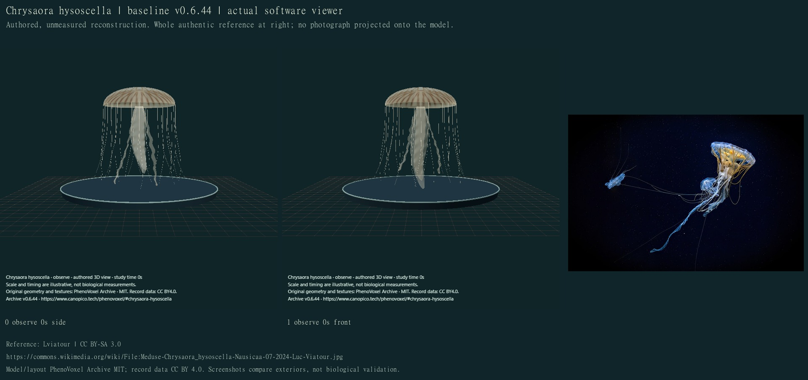
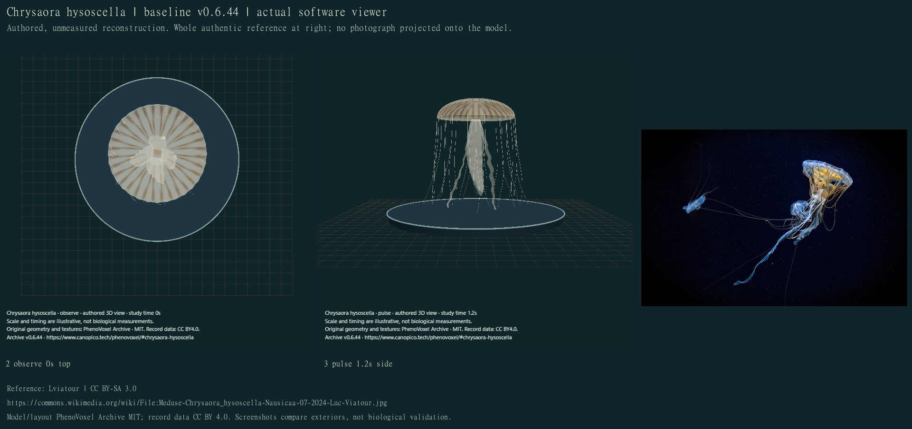
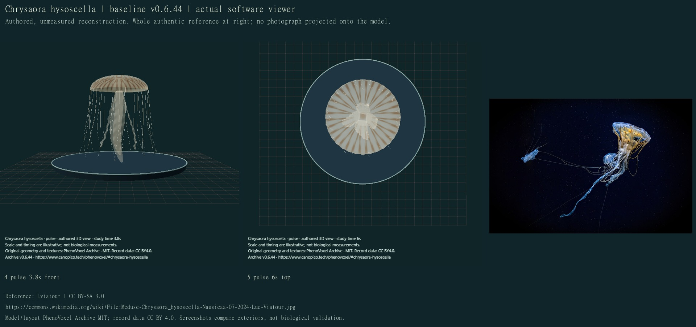
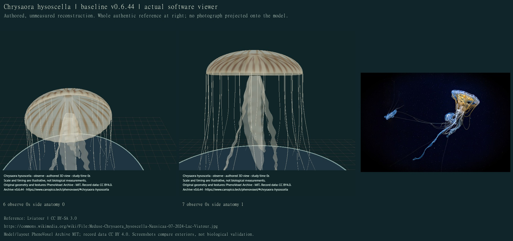
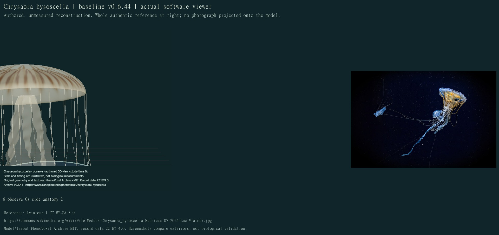
All 24 final compiled main-viewer states were individually inspected on 12 credited sheets. Display scale and study seconds are illustrative. Software compatibility rendering does not establish live-tissue scattering, refraction or final WebGL optics.
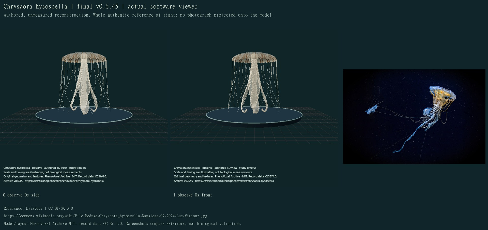
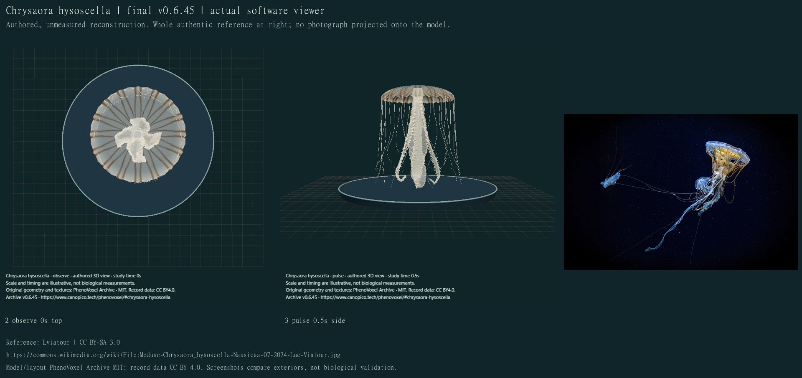
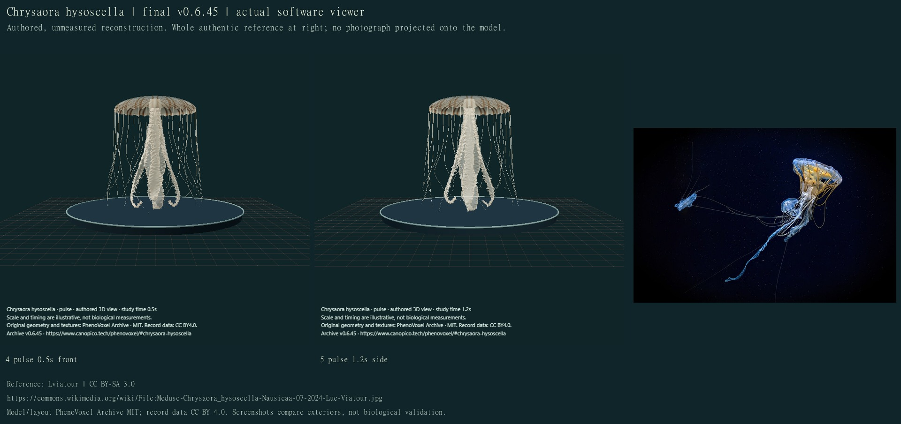
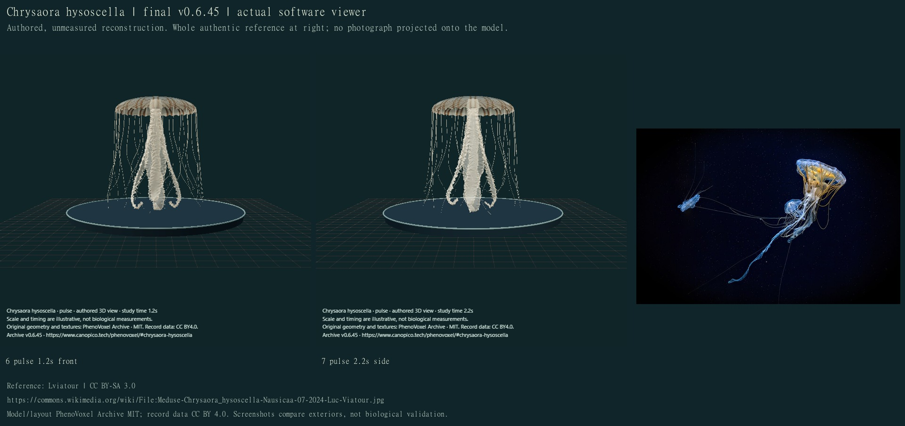
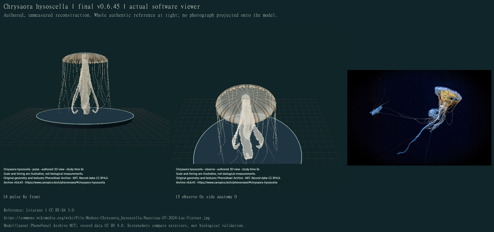
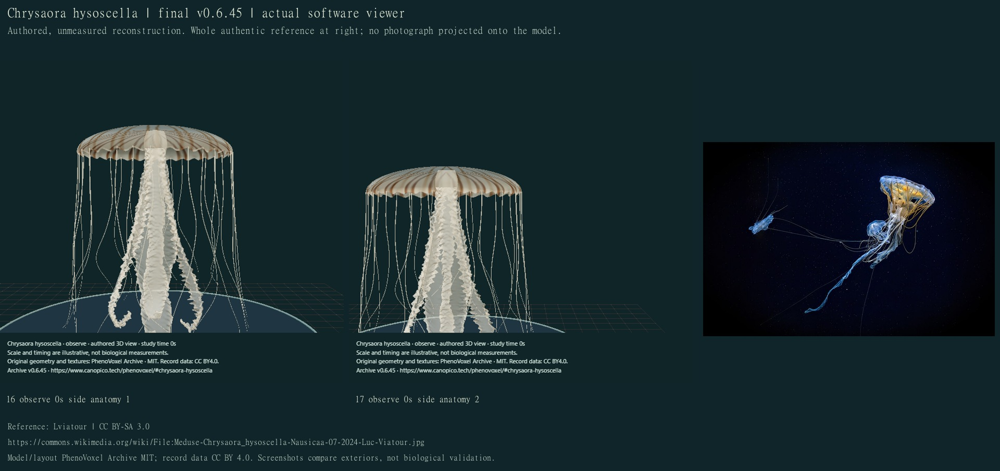
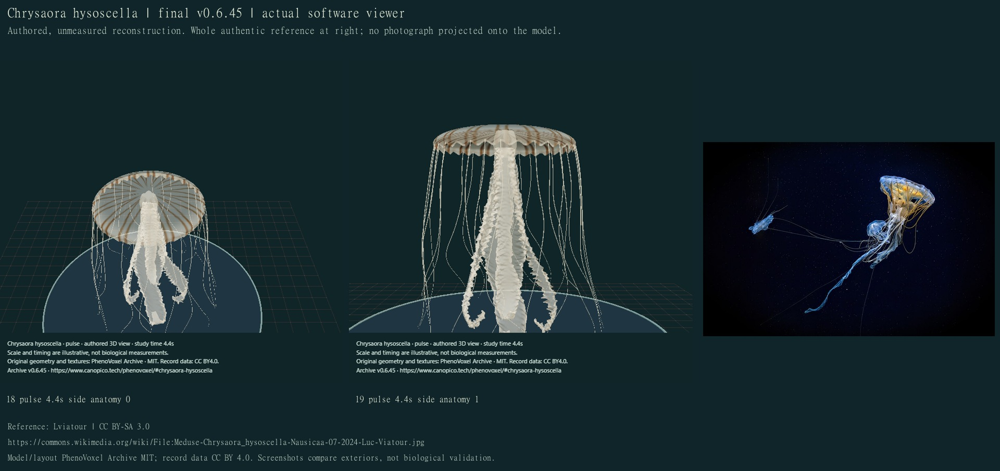
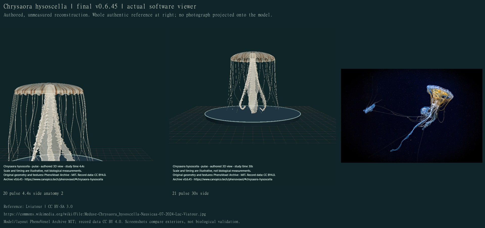
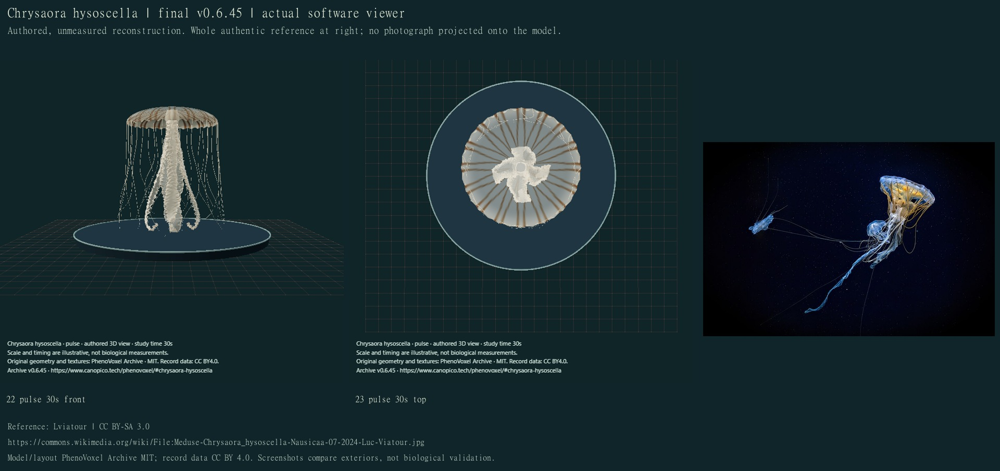
| Area | Changed | Still unresolved |
|---|---|---|
| Oral arms | Four curved closed V-section exteriors, finer irregular frilled edges, broader proximal regions and selected distal curls. | Partly numerical folds, simplified overlapping tissue unions, no fused histology or open food grooves; curling profiles and thickness unmeasured. |
| Bell and pigment | Smoother saucer-like wall,32 selected rounded lappets, spatial cream/brown branching fields attached to the surface. | Selected pattern, anatomy, material and opacity; natural variation and wet optics unresolved. No photographic texture projection. |
| Marginal tentacles | 24 closed tapered curved exteriors grouped three per octant; equal selected longitudinal extent with different apparent extension. | No specimen fitting, discharge, prey/contact mechanics or full self-collision proof. Thin threads can rasterize as dots in software view. |
| Movement | Same geometry/material/colour through a finite 8 second regional contraction/recovery with delayed appendage flexion, exact neutral reset and held completion. | Authored timing and amplitudes, no organism travel, full swimming, flow/pressure/contact forces, feeding or physiology. |
Private drafts were revised for sparse narrow frills, weak bell pigment, regular saw-like folds and an overly bulbous central support. Final finer folds still show numerical rhythm and the central union remains simplified. All 317 full local checks passed before the final marginal-root attachment adjustment; all 23 affected checks passed afterward, including the added bell-triangle contact check. The initial broad run passed 316 of 317 checks: the historical Anthozoa 290-record hash contract still treated this deliberately revised Chrysaora as unchanged. The correction restores its exact documented prior fields through the reversible revision ledger before checking those historical hashes; none are dropped or regenerated. These checks cover closed noncollapsed surfaces, exact retained photo/identity, grouped appendages, attached pigment, finite same-model movement, stable root and exact neutral recovery. They do not establish scientific accuracy or independent specialist validation.
Machine-readable sources, findings and capture ledger · Movement/development implementation inventory. Next individual jellyfish: Cyanea capillata, then the remaining saved queue. Other groups and mechanisms remain unfinished.